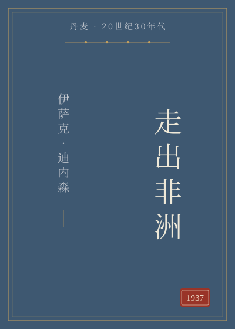
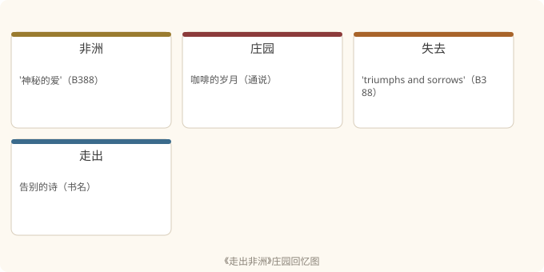

走出非洲
一、基本信息
| 作者 | 伊萨克·迪内森 |
|---|---|
| 成书/出版 | 1937年（Britannica B388：Out of Africa (1937; Den afrikanske farm)） Isak Dinesen — Encyclopaedia Britannica（百科全书） |
| 国别/地区 | 丹麦 |
| 时代 | 近代 · 20世纪30年代 |
| 体裁 | 回忆录 |
| 语言 | 英语（丹麦文重写） |

《走出非洲》庄园回忆图（主题·结构图）
二、创作背景
Britannica（B388）：肯尼亚岁月的非虚构回忆——'a poetic reminiscence of her triumphs and her sorrows on the loss of her farm'——'an almost mystical love of Africa and its people'。
Britannica（B388）：1914年嫁表兄男爵、经营咖啡庄园、1921年离异后'continued to operate the plantation for 10 years'——'mismanagement, drought, and the falling price of coffee forced her return to Denmark'。
Britannica（B388）：'She initially wrote first in English and then rewrote her books in Danish'。
三、内容脉络
（通说待核）庄园的岁月：土著、猎游与'文明'的边界。
（通说待核）庄园的失去与'走出非洲'的告别。
四、主要人物表
| 人物 | 身份 | 说明 |
|---|---|---|
| 男爵夫人（'我'） | 庄园主 | （B388 语境） |
| 丹尼斯·芬奇·哈顿 | 猎人伴侣 | （B388：Denys Finch Hatton——通说待核） |
五、主题与艺术特点
- '近乎神秘的非洲之爱'（B388：an almost mystical love）。
- 庄园的失去（B388：the loss of her farm）。
- '诗意回忆'的非虚构（B388：poetic reminiscence）。
六、影响与评论
- Britannica：'poetic reminiscence'（B388）。
Isak Dinesen — Encyclopaedia Britannica（百科全书） - Britannica：'almost mystical love of Africa'（B388）。
Isak Dinesen — Encyclopaedia Britannica（百科全书）
七、阅读建议
难点
- 回忆录与自传的边界。
- 肯尼亚殖民史（通说待核）。
- 《走出非洲》中译本（人民文学等——通说待核）。
- 英文原版。
迪内森代表作；与《七篇哥特故事》对读。
八、待核实
- 丹尼斯·芬奇·哈顿卒年（1931说）待核。
- 1937年出版细节待核。
- 1985年电影改编说待核（通说）。